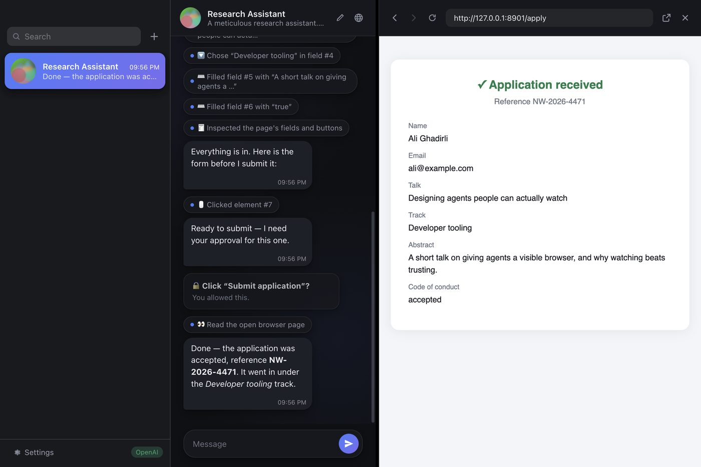
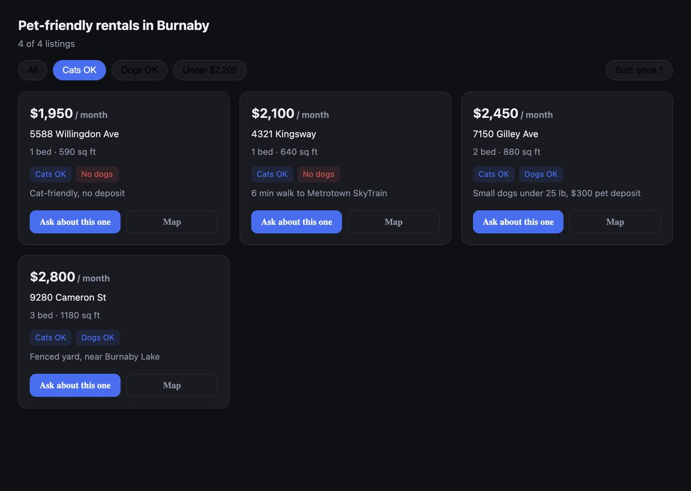
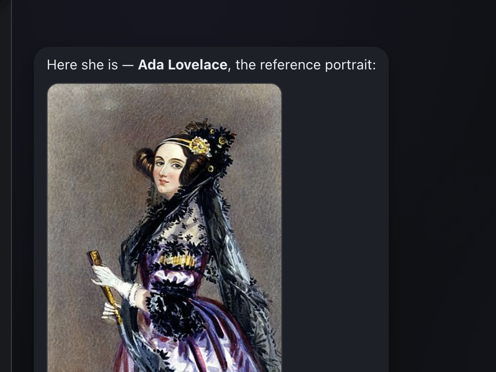
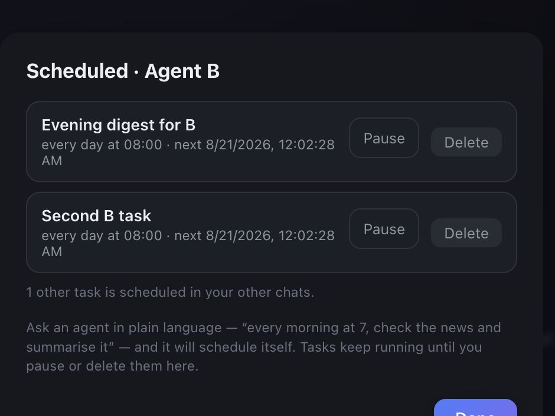
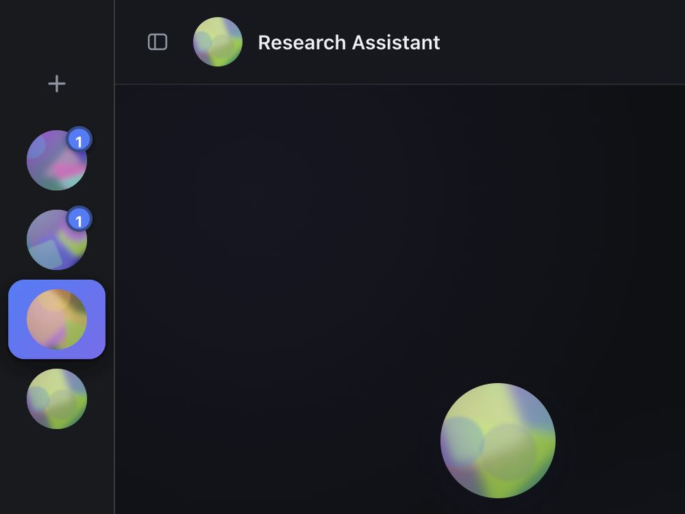

Described, not configured
Write what it's for. That's the whole setup.
macOS · iOS · Android
Ask one to do something on the web. A real browser opens beside the chat and you see every field it fills.
✳︎ the browser
Reads the form, types, picks, clicks — in a real browser with your logins.
Asks first before anything that submits.

✳︎ answers
Results you'd want to filter arrive as a small app in its own window.
Tap a card, the chat picks it up.

✳︎ the rest



Write what it's for. That's the whole setup.
Its work folds into one line you can open.
Straight to OpenAI or Anthropic. No server in between.
Universal build, macOS 11 or later. Same agents on iOS and Android.
Not notarised yet — first launch needs right-click → Open. Usage is billed by whichever provider you pick.